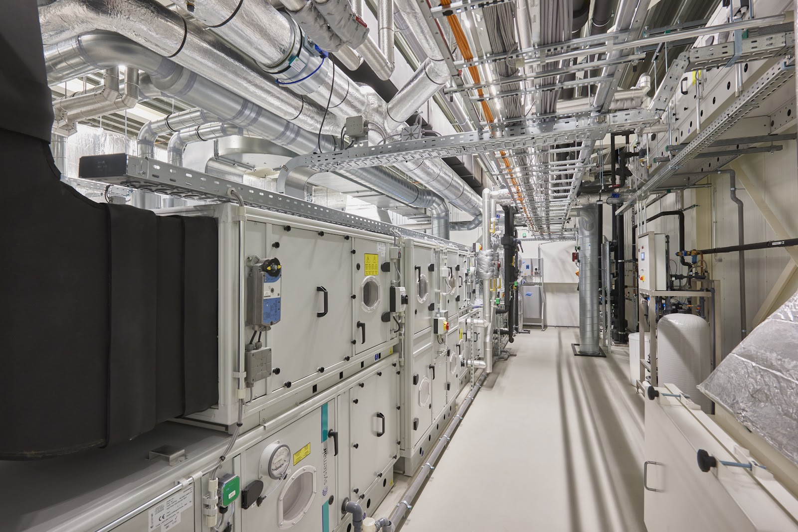
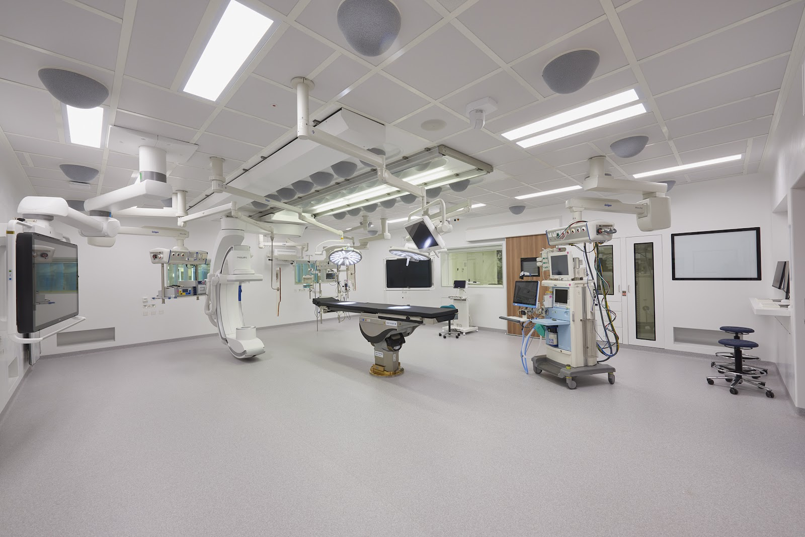
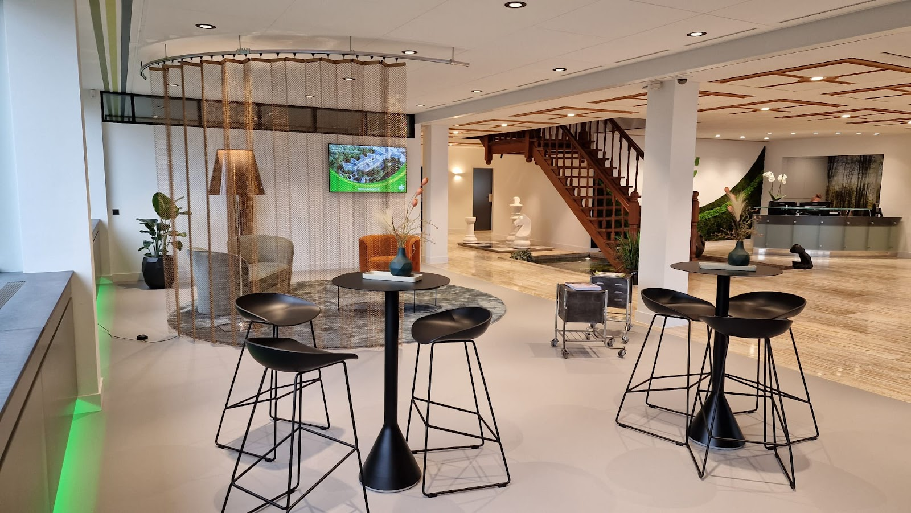
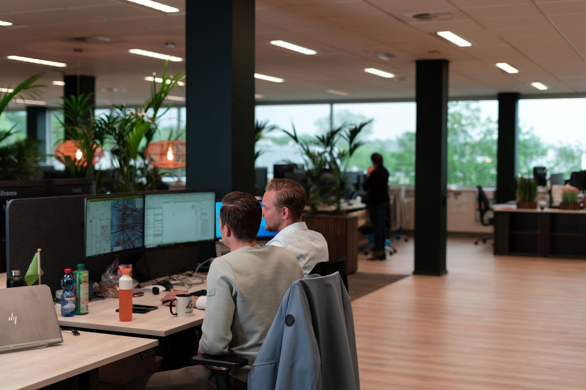
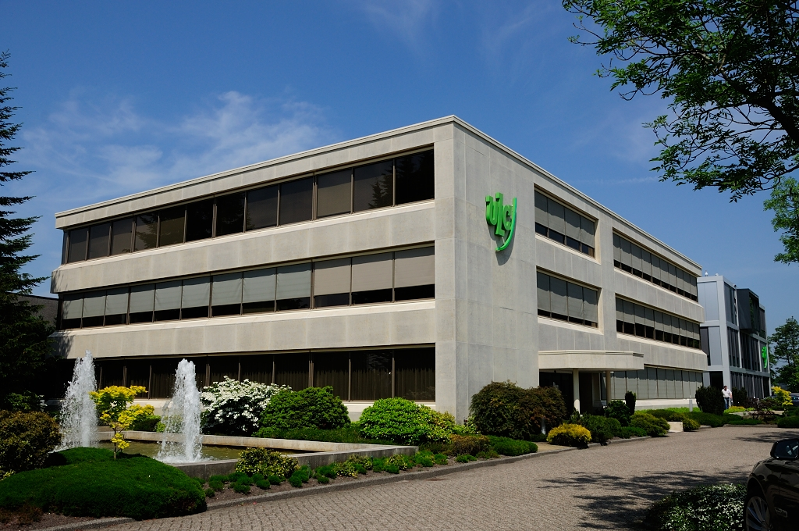

Eerste paal geslagen voor Innovatievleugel Prinses Máxima Centrum
Installatietechniek voor de zorg, Utrecht
De zorg gaat door. Wij ook.
Wij ontwerpen, bouwen en onderhouden de technische installaties van ziekenhuizen, zorginstellingen en laboratoria. Terwijl daar dag en nacht gewerkt wordt.


Thuis in de operatiekamer.
Operatiekamers, verkoeverruimten, IC-units en SEH-afdelingen. Wij weten wat daar nodig is: de juiste verlichting, schone luchttoevoer, medische gassen en noodstroom die het altijd doet.
Onze engineers ontwerpen elke installatie eerst virtueel in BIM. Zo vangen we fouten op de tekentafel, en niet op de afdeling. Ook als er last minute iets verandert.
- Ziekenhuizen
- Zorginstellingen
- Laboratoria
- Nieuwbouw en renovatie
Van eerste tekening tot jaarlijks onderhoud.
Omdat wij alle elektrotechnische en werktuigbouwkundige installaties zelf kunnen ontwerpen, realiseren, beheren en onderhouden, heeft u één partij voor het hele gebouw.
Installatietechniek
Alle elektrotechnische en werktuigbouwkundige installaties in en rondom gebouwen: elektra, verlichting en klimaatbeheersing, ontworpen en gerealiseerd.
Brandbeveiliging
Installaties die brand detecteren, melden en blussen. Van branddetectie tot sprinkler- en watermistinstallaties.
Beheer en onderhoud
Betere prestaties en een langere levensduur voor alle gebouwgebonden installaties. En de zekerheid dat u voldoet aan de wet- en regelgeving.
Wij werken voor
- Gezondheidszorg
- Ziekenhuizen en zorgorganisaties die moeten verduurzamen terwijl de zorgvraag groeit.
- Laboratoria
- Kritieke omgevingen waar temperatuur, luchtvochtigheid en luchtdruk precies moeten kloppen.
- Zakelijk en commercieel vastgoed
- Kantoren, winkels en hotels, waar comfort, gezondheid en veiligheid voorop staan.
- Maatschappelijk vastgoed
- Overheidsgebouwen, scholen en musea, inclusief inbraakbeveiliging en toegangscontrole.
Hier draait onze techniek.
Een greep uit de ziekenhuizen, labs en gebouwen waar wij aan werkten.
OLVG locatie Oost, OK-centrum
Puzzelen in de bestaande ruimte
Groene Hart Ziekenhuis Gouda
Vernieuwbouw: techniek verplaatsen terwijl de zorg doorgaat
Tergooi MC Hilversum, bouwdeel F
Een multifunctioneel gebouw voor de toekomst
OLVG locatie West, laboratoriumgebouw
Duurzame keuzes bij nieuwbouw laboratorium
St. Antonius ziekenhuis
Afdeling voor afdeling wordt gerenoveerd
Noordwest Ziekenhuisgroep Alkmaar
In 3 fasen volledig vernieuwen
De Sax Rotterdam
Brandveiligheid op grote hoogte
Naturalis Biodiversity Centre
Installaties nu flexibeler, robuust en toekomstgericht
Abdij van Egmond
Techniek in dienst van een eeuwenoude traditie
Wageningen University & Research
Voorbereid op de toekomst
Net gebeurd
Hoogste punt bereikt voor nieuw facilitair gebouw Groene Hart Ziekenhuis
ULC Installatietechniek tekent overeenkomst voor volgende fase vernieuwbouw Groene Hart Ziekenhuis
Samen zorgen voor morgen.
Daar staan ULC en haar medewerkers al meer dan 100 jaar voor. Samen met opdrachtgevers, leveranciers en onderaannemers, want samen kom je tot het beste resultaat.
Met slimme, energiezuinige oplossingen helpen we (zorg)vastgoed verduurzamen en de CO2-voetafdruk verkleinen. Bijvoorbeeld door minder afval en circulair bouwen.


Kom werken bij een familiebedrijf.
Bij ULC werken ongeveer driehonderd elektrotechnisch en werktuigbouwkundig specialisten. Aan topprojecten, met collega's die voelen als je tweede familie, volop doorgroeimogelijkheden en een prima salaris.
Veel collega's blijven hun hele werkzame leven, en daarna komen hun kinderen. Servicetechnicus, monteur, specialist brandbeveiliging of projectmanager: jong of oud, ervaren of minder ervaren, bij ULC kom je verder.
Vraag naar vacaturesWat mensen over ons zeggen
"Yusuf was een fantastische hulp samen met zijn collega!!! Op de parkeerplaats van OLVG west was de accu van onze startmotor opeens leeg. Hij was zo lief om te helpen met zijn auto zodat we de startkabels konden gebruiken. Super bedankt Yusuf voor je hulp, we hebben de boot naar Terschelling gehaald."
"Bedrijf dat veel kennis in huis heeft."
"Goede service en kennis van zaken."
Spreek iemand van ons.
Een project in voorbereiding, een vraag over onderhoud of gewoon meer informatie? Bel ons of stuur een bericht, zoals het u het beste uitkomt.
Bel 030 265 0500Openingstijden
| Maandag t/m vrijdag |
| 08:30 tot 17:00 |
| Zaterdag en zondag |
| Gesloten |
